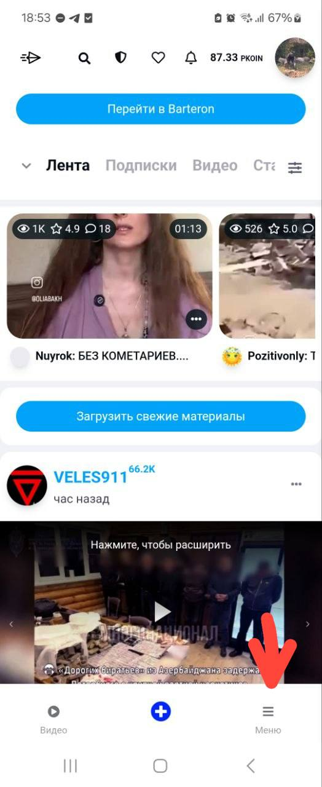
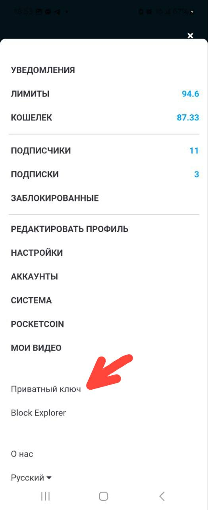
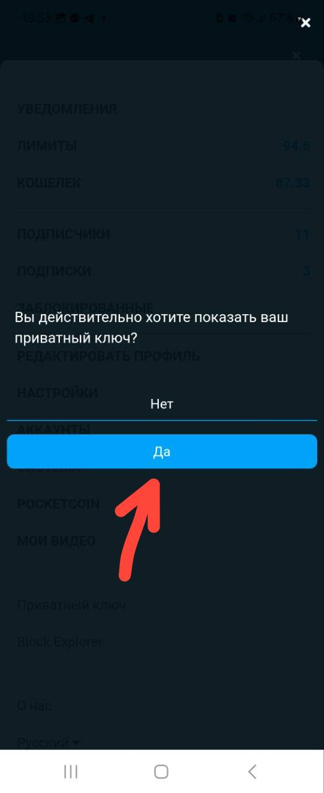
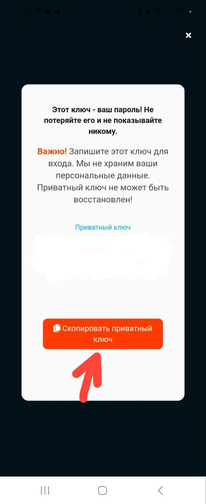
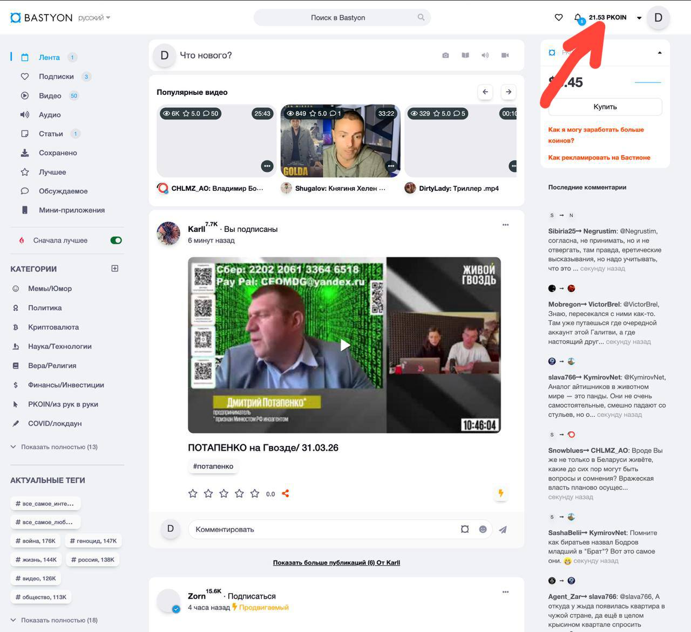
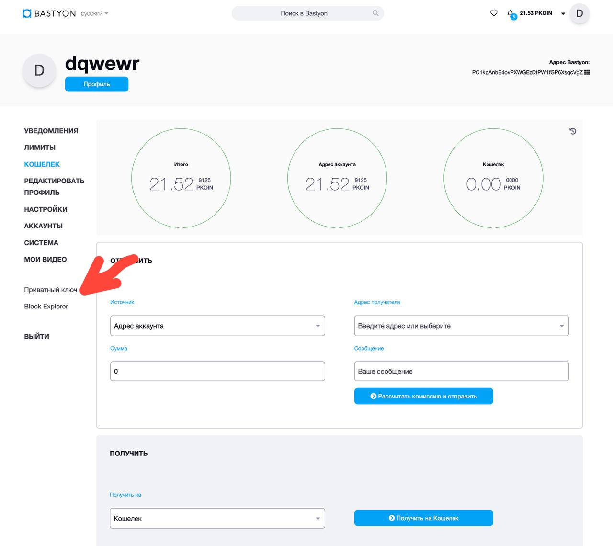
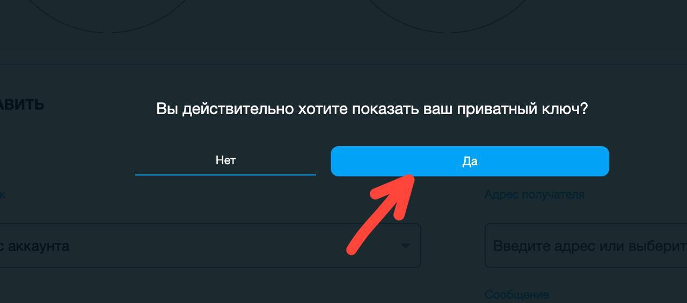
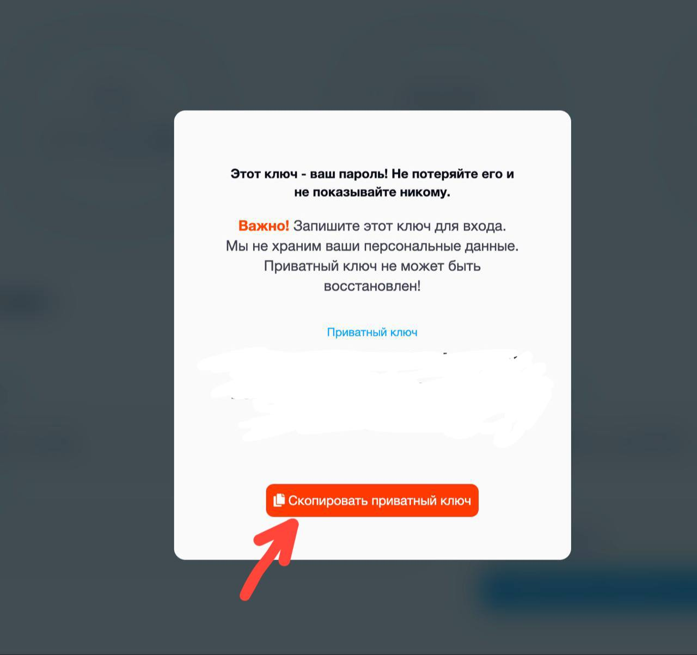

Откройте приложение Bastyon и нажмите Меню (три полоски) в правом нижнем углу экрана.

В открывшемся меню прокрутите вниз и нажмите Приватный ключ.

Появится подтверждение: «Вы действительно хотите показать ваш приватный ключ?». Нажмите Да.

Ваш приватный ключ отобразится на экране. Нажмите Скопировать приватный ключ, чтобы скопировать его в буфер обмена.

Откройте Bastyon в браузере или десктоп-приложении. Нажмите на иконку профиля в правом верхнем углу.

В боковом меню нажмите Приватный ключ.

Подтвердите действие, нажав Да.

Ваш приватный ключ появится на экране. Нажмите Скопировать приватный ключ.

Open the Bastyon app and tap Menu (three lines) in the bottom-right corner.
Scroll down in the menu and tap Private key (Приватный ключ).
A confirmation dialog will appear. Tap Yes (Да).
Your private key will be displayed. Tap Copy private key (Скопировать приватный ключ) to copy it to the clipboard.
Open Bastyon in a browser or the desktop app. Click your profile icon in the top-right corner.
In the sidebar menu, click Private key (Приватный ключ).
Confirm by clicking Yes (Да).
Your private key will appear on screen. Click Copy private key (Скопировать приватный ключ).